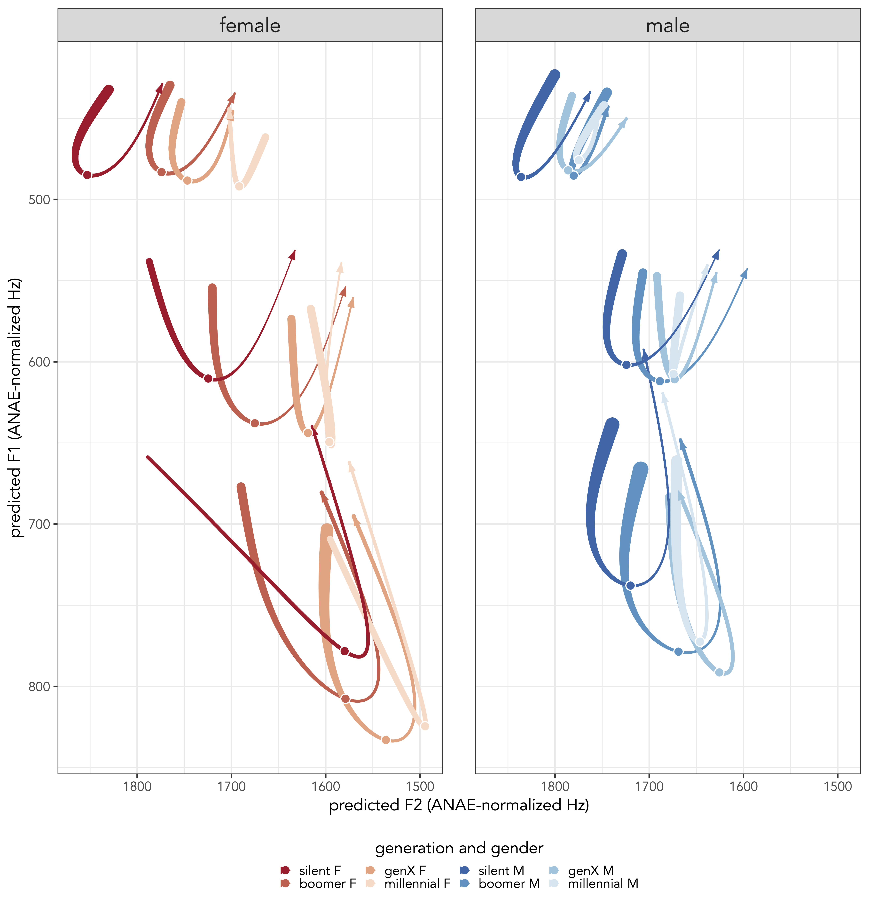

I’m in Seattle at the 181st Meeting of the Acoustical Society of America right now! This is my first in-person conference since October 2019, so it’s great to be here. I presented two posters today, which you can read about and download below.
Beyond Midpoints: Vowel Dynamics of the Low-Back-Merger Shift
Download the poster here!
For some reason, I hadn’t yet presented any of my dissertation findings at a conference, not even while I was working on them or writing them up. Anyway, I’m happy to finally present some of my results at a conference. The purpose of this paper is to describe changes in vowel trajectory that accompany changes in midpoints. The Low-Back-Merger Shift is a now-widespread shift across much of North America. My data from Washington shows it pretty clearly across generations. But when I take a wide-angle lens at the vowel trajectories, I found that there was much more to the story than just a global lowering/centralizing of the front lax vowels.

There were perhaps three patterns I noticed when I modeled vowel trajectories. First is that the trajectory length was different between them. The low vowel /æ/ was much longer, then /ɛ/, and then /ɪ/. There’s also a general U-shaped pattern. Finally, the “angle” of this U-shaped was more towards the “left” for /æ/, more towards the right for /ɪ/, and in the middle for /ɛ/. These descriptions are consistent across generations and between the two geneders modeled, so it may say more about American English articulation than anything sociolinguistic.
Perhaps more interestingly though was how these trajectories changed—within the parameters just described—across generations. Older people’s vowels traversed through much more of the F2 space than younger generations did. The result is that the older people’s vowels look more like a shallow U-shape while the younger people’s is more of V-shape or even a “bounce” straight up and down in the F1-F2 vowel space. The fact that this was consistent across all three front lax vowels and between the genders suggests some interesting sociolinguistic change.
At this point, this is largely descriptive work. I don’t know how perceptible these differences are and I’m not even sure if everything I just described is statistically significant. It’ll take additional work to confirm both of these. Trajectories are often ignored because they’re chalked up articulatory causes; are we comfortable saying that trajectories are 100% phonetic and 0% sociolinguistic? (Meanwhile, if I may be a bit snarky, are the arbitrary single-point measurements that are typically analyzed magically sociolinguistically important?) I think people can exploit trajectories for sociolinguistic purposes. I just don’t know how or to what extent yet.
Sample size matters when calculating Pillai scores
Download the poster here!
I’m very excited about this Pillai scores paper with a new colleague, Betsy Sneller! The background for this papers is that a while ago I was analyzing some cot-caught merger data I had collected. I noticed that, without exception, I got higher pillai scores in wordlists than I did in conversational data. I thought I had stumbled upon some interesting style shifting! But it was too clean of a pattern, so I did some digging and found that it’s likely because of the sample size between the two subsets. I had less data from the wordlists than I did from the conversation. I hypothesized then that less data leads to higher Pillai scores.
Methods and Experiements
So in this paper, we test this hypothesis specifically by running a bunch of simulations. We started with a single bivariate normal distribution. We then randomly drew 5 numbers from that distribution and called it “group 1.” We then drew another 5 numbers from the exact same distribution and called it “group 2.” The fact that they’re drawn from the same underlying distribution represents a true underlying vowel merger. We then calculated the Pillai score of those two groups. We repeated with these group sizes 1000 times. Then we drew 6 tokens from each group 100 times and calcualted Pillai scores. Then 7. And all the way up to 100.
As seen in the main figure in the poster (slightly modified below), the results were clear: the larger the sample sizes, the lower the Pillai scores were. In theory, the Pillai scores should all be around zero since they’re from the same distribution. But with small samples sizes (<10) observations per group, we very often got pretty high Pillai scores—scores that some researchers have considered to be distinct. It took around 30 observations per group to reliably (meaning 95% of the time) get the Pillai score under the somewhat conservative threshold of 0.1. It took 60 observations per group to get Pillai scores reliably below 0.05. This was concerning to us because few sociophonetic studies have sample sizes that large!
We were also concerned about unequal sample sizes betwen groups. So we reran the experiment, except the group sizes weren’t the same size. Each group could be anywhere from 5 to 100 observations, and we ran all 9000 or so combinations. The results were surprising to us—unequal group sizes doesn’t matter at all. The only thing that mattered was the total sample size. You can see this in the figure in the top right of the poster (or below): as you go from bottom-left to top-right, the average log Pillai scoreWe used log(pillai) because it worked better for this visual and for the math. goes from high to low. But the fact that there is no pattern from the top-left to the bottom-right diagonal means that unequal sizes don’t matter.
In other words, if Group A has 25 observations and Group B has 5, the Pillai score will average around 0.07. That’s the same as if you had two groups of 15. If Group A has 25 observations and Group B has 100, the Pillai score will average around 0.01. That’s the same as if you had two groups of 62.
Implications
We can think of a lot of implications for these findings. For one, mergers are probably underreported and splits/distinctions are probably overreported. This is because many sociophonetic studies run Pillai scores on somewhat smaller samples.
Because of sample size differences, comparison across studies is difficult. A study that collects lots of data per person will likely report lower Pillai scores than a study that is based on fewer observations per person.
Going back to the main impetus for this paper, comparison within studies is difficult. Since more careful speech styles typically elicit fewer observations, reading tasks will have higher Pillai scores than conversational data. To a naive researcher, this will be interpreted as style differences, when it is really just a reflection of the underlying math! This is such an important point and you can count on hearing more from me and Betsy about this in later venues.
Finally, one way to overcome the sample size difference is to look at the p-value that comes out the MANOVA test that the Pillai score came from. These p-values do seem to be reported in more phonetics-oriented papers, but for some reason they’re not in sociophonetics papers. So rather than us coming up with arbitrary and ad hoc thresholds for what a merged Pillai score should be, let’s us the p-value instead. Not reporting this p-value, to me at least, is kinda like reporting a t-statistic or F-ratio but without the accompanying p-value.
As a final note, and this is more of an after-thought for us, I wonder if it would be more helpful to report log(pillai) rather than raw pillai scores. Since Pillai ranges from 1 (completely distinct) to 0 (complete overlap), log Pillai would range from 0 (completely distinct) to negative infinity (complete overlap). In practical terms, it would mostly be betwen 0 and around –4 (the latter corresponding to a raw Pillai score of about 0.01). We’ll probably talk more about this in other venues so stay tuned for that.